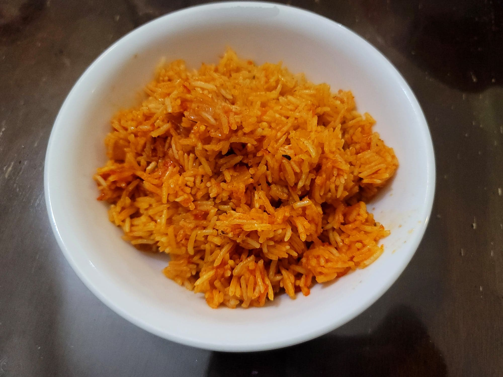

Jollof Rice

Ingredients:
Pepper blend:
- 3 Red bell peppers, stemmed and deseeded
- 3 Roma tomatoes, stemmed
- 2 Scotch bonnet peppers
- 1 Red onion, peeled
Jollof Rice:
- 3/4 cup Canola oil
- 1 Red onion, diced
- 5 tbsp Tomato paste
- 4 cloves Garlic, grated
- 1 tbsp Ginger, grated
- 2 Bay leaves
- 1 tsp Dried thyme or 1 tbsp Fresh thyme
- 1 tbsp Curry powder
- 1 tbsp Chicken bouillon powder
- 1 tsp Salt, or to taste
- 1/4 tsp White pepper
- 4 cups Chicken stock
- 6 cups Basmati rice
- 2 tbsp Butter
- 1 Red onion, sliced
- 1 small/medium Tomato, cut into wedges
Instructions:
- Combine the pepper blend ingredients into a blender and blend until completely smooth.
- Heat the oil in a large pot over medium heat. Add in the onion and sauté until translucent, about 5 minutes. Then add in the tomato paste and sauté for another 5 minutes.
- Stir in the garlic, ginger, and bay leaves and sauté for 2 minutes. Then add in the blended pepper sauce. Bring to a boil and then let simmer over medium until the sauce has reduced and you can see the oil separating on the top, about 15 minutes or more.
- Stir in the thyme, curry powder, chicken bouillon, salt, and white pepper. Stir and cook for another 5 minutes.
- Stir in the chicken stock until homogenous. Then stir in the rice. Cover the pot with foil and then a tight lid. Heat over high heat for 3-5 minutes to come to a boil, and then reduce to medium-low. Let cook, covered, for 30 minutes, or until the rice is cooked.
- Add in the sliced onion, tomato, and butter. Stir the rice with a large spoon to both mix in the onion and tomato, as well as puff up the rice. Then re-cover tightly with the lid and foil to let the steam cook the onion and tomato.
- Serve hot with any meat of choice.